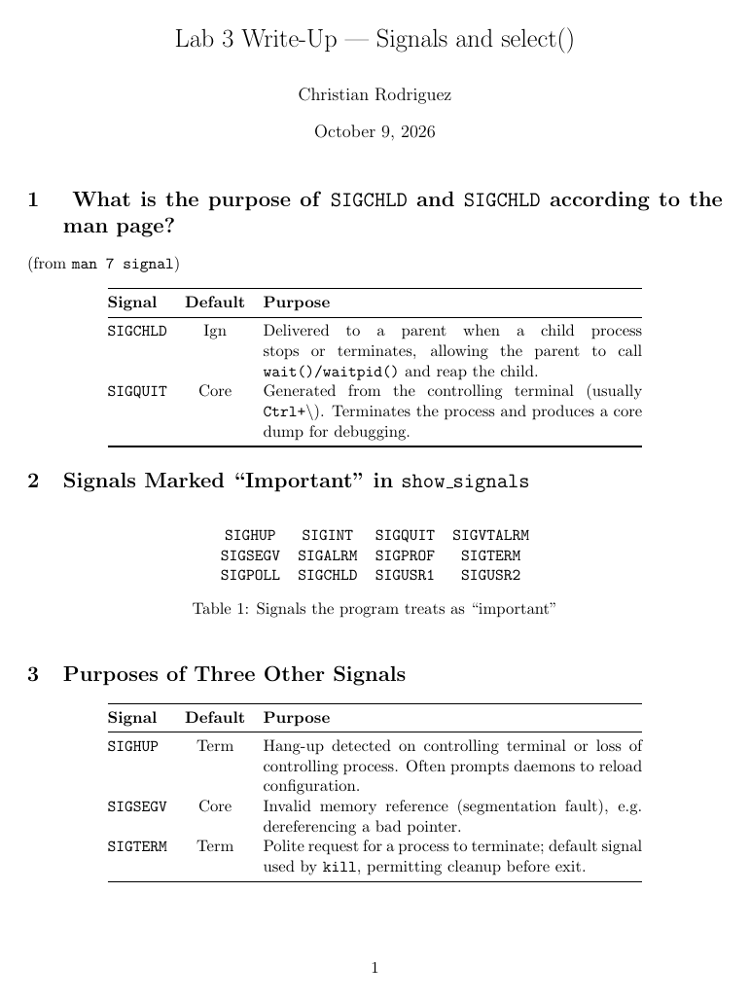

CMPS 3620 · Lab 3
Signals and select()
A study of signal masks and select() using the course's select.c, which blocks SIGCHLD and SIGQUIT, catches Ctrl-C and waits on the keyboard with a 30-second timeout. The write-up explains how the program works and plans how select() can make the lab 2 chat full-duplex.
What I did
- Built and ran
select.c, trying Ctrl-C, typed input and the timeout. - Answered the questions in
Write-Up-Questions.mdfrom the man pages and the code: whatSIGCHLDandSIGQUITare for, howsigemptysetandsigprocmaskbuild and apply the mask, and how the Ctrl-C handler is installed. - Explained how
FD_SETputs standard input in the read set thatselect()watches. - Outlined the changes for lab 4: watch the socket and the keyboard in one
select()call and handle whichever is ready.
What I used
- C
- Signals
- sigprocmask
- select()
- LaTeX
Concepts:
- Signal masks
- I/O multiplexing with
select()
Libraries
| Header or module | What it is for |
|---|---|
signal.h | Signals: sigaction, kill and signal sets |
sys/select.h | select() for waiting on several file descriptors |
sys/types.h | System data types such as pid_t |
C standard library: errno.h, stdio.h, string.h.
How to build and run
From the folder with the code:
gcc -o select select.c
./selectRequires: Linux with gcc. Write-ups in .tex/.ltx build with any LaTeX distribution (pdflatex).
Snapshots
Real runs of the program, captured in a terminal or on a virtual screen.
Ctrl-C runs the handler instead of ending the program, and a period on its own line exits.
./select Current Signal Mask: 0000000000000000000000000000000 New Signal Mask: 0010000000000000100000000000000 QUIT CHLD Process ID: 7903 Enter a string at the prompt or wait for timeout. Enter just a period on a line by itself to exit. Try entering CTRL-C, CTRL-D and other signals at the prompt. Also open a second terminal and try sending signals via kill, such as: kill -SIGCHLD 7903 kill -SIGQUIT 7903 kill -SIGINT 7903 kill -SIGHUP 7903 kill -SIGTERM 7903 NOTE: Some of the above will terminate the program. Restart to try more. enter a line> hello You typed: hello enter a line> ^C ctrlc_handler: ^C hit 1 times You typed: enter a line> . Exiting select() loop at user's request...
Page 1 of Write-up.ltx, built with pdflatex.


Files
| File | What it is |
|---|---|
Write-up.ltx | The write-up (LaTeX). |
| File | What it is |
|---|---|
select.c | The course's example of signal masks and select(). |
Write-Up-Questions.md | The questions the write-up answers. |